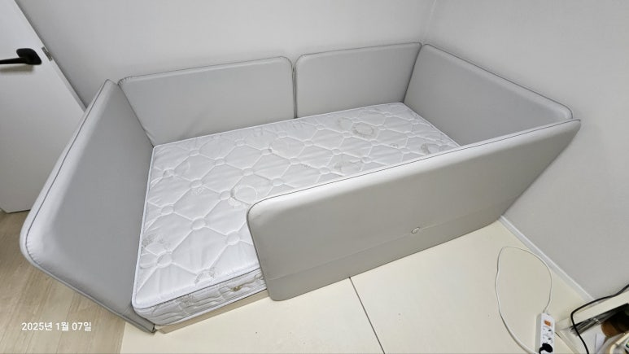
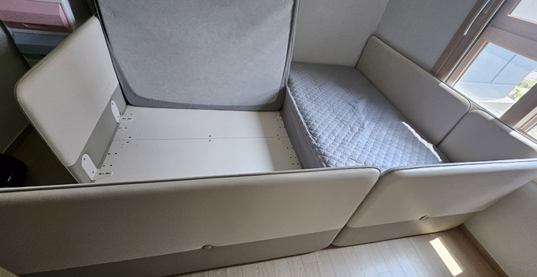
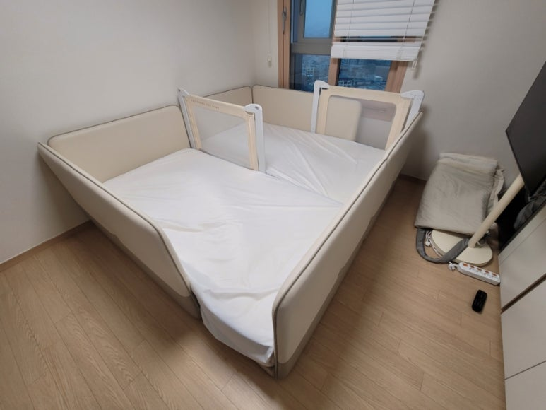
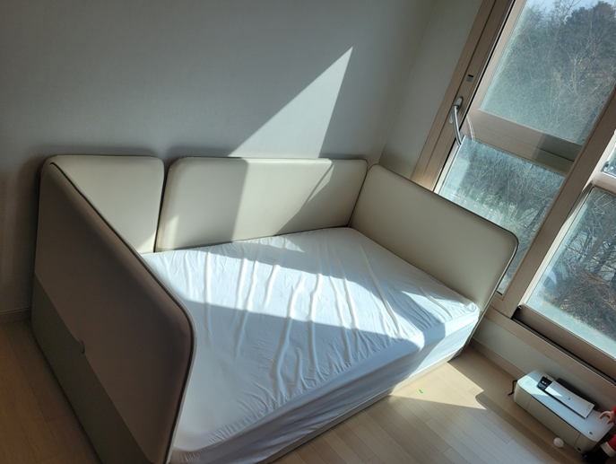
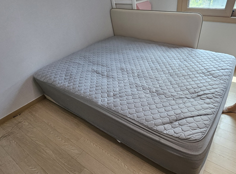
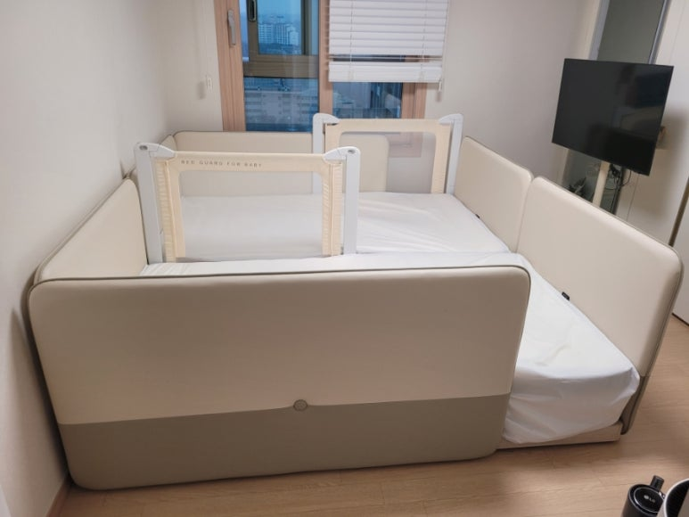
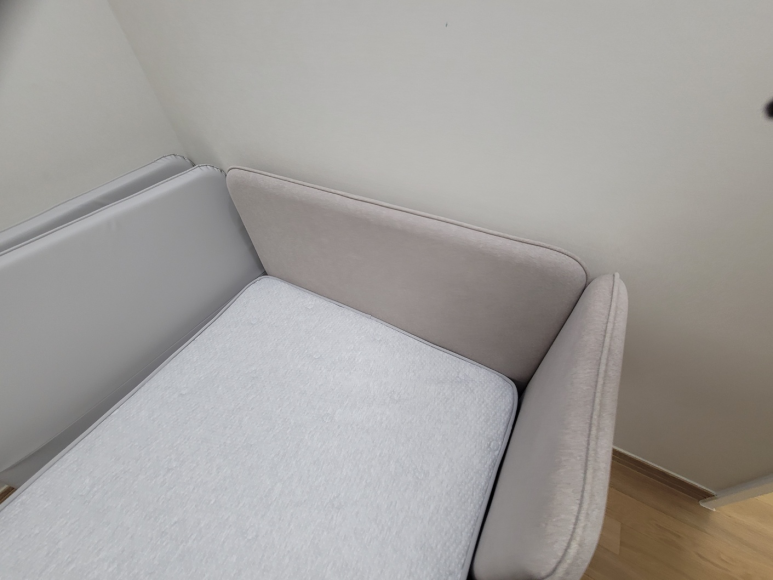

일룸 쿠시노 이전설치
저상형 패밀리 침대 분해부터 재조립까지
아이와 함께 쓰던 일룸 쿠시노, 이사 갈 집에서도 그대로 쓰고 싶으신가요? 쿠시노는 여러 개를 이어 붙여 쓰는 경우가 많아서 옮길 때 구성을 잘 확인해야 해요. 코니처는 일룸 쿠시노를 분해해서 옮기고, 새 방에서 다시 연결해 설치해 드려요. 쿠시노 작업도 평균 10년 이상 경력의 지역 기사님이 직접 찾아가요.

일룸 쿠시노 이전설치
11만 원부터
표시된 금액은 최소 시작 금액이에요. 가구 크기와 수량, 이전 거리, 층수, 엘리베이터 사용 여부 등 작업과 현장 상황에 따라 금액이 달라져요. 정확한 금액은 사진을 보고 문자로 안내드려요.
현금가 기준이며, 카드 결제나 현금영수증이 필요하면 부가세가 별도예요.
문자 상담 신청하기일룸 쿠시노, 옮길 때 살펴야 할 것
일룸 쿠시노는 바닥에 낮게 놓이는 저상형 침대에 쿠션 가드가 둘러진 구조예요. 아이 침대로, 또 가족이 함께 자는 패밀리 침대로 많이 써요.
- 연결 구성싱글 두 개를 붙이거나 여러 개를 이어 쓰는 경우가 많아요. 몇 개를 어떻게 연결했는지 확인해요.
- 쿠션 가드둘레의 쿠션 가드는 패브릭이라 오염되지 않게 감싸서 옮겨요.
- 추가 안전가드아기 침대로 쓸 때 덧붙인 안전가드가 있다면 함께 분리해요.
- 새 방 크기패밀리 구성은 길이가 길어서 새 방 벽 길이를 꼭 알려주세요.
일룸 쿠시노 이전설치 과정
-
분해
매트리스를 내리고 쿠션 가드와 연결 부위를 풀어 침대를 하나씩 나눠요.
-
포장과 운반
분해한 프레임과 가드를 포장해서 새 방으로 옮겨요. 이사도, 방간이동도 가능해요.
-
재조립과 연결
새 방에서 프레임을 다시 조립하고, 원래 쓰던 구성대로 서로 연결해요.

-
마무리
매트리스를 올리고 가드와 연결 부위가 단단한지 확인한 뒤 마무리해요.

쿠시노 작업 순서와 방법은 침대 구성과 현장 상황에 따라 기사님과 상담 후 진행돼요.
구성을 바꾸고 싶다면
아이가 크면서 붙여 쓰던 쿠시노를 나눠 두 방에 따로 놓거나, 반대로 따로 쓰던 침대를 붙여 패밀리 침대로 바꾸고 싶을 때가 있어요. 쿠시노 구성에 따라 가능한 경우가 있어서, 지금 쓰는 모습과 원하는 배치를 함께 보내주시면 상담할 때 확인해 드려요.
아기 때 덧붙여 쓰던 안전가드를 이제 떼고 싶거나, 새 집에서는 벽에 붙여 한쪽 가드를 빼고 싶을 때도 함께 말씀해 주세요. 새 방의 창문과 문 위치를 알려주시면 침대 방향을 정하는 데 도움이 돼요.
쿠시노 견적에 필요한 정보
- 침대 전체 사진위에서 내려다본 사진과 옆면 사진을 찍어 주세요.
- 몇 개를 연결했는지싱글 몇 개인지, 슈퍼싱글이나 퀸과 함께 쓰는지 알려주세요.
- 이동 경로어디에서 어디로 옮기는지, 거리와 층수, 엘리베이터 사용 여부를 적어 주세요.
- 새 방 크기침대를 놓을 벽 길이와 방 크기를 알려주세요.
쿠시노 옮기기 전 준비
침구와 베개, 침대 위 장난감은 미리 치워 주세요. 매트리스 커버를 씌워 두시면 운반할 때 깨끗하게 옮길 수 있어요. 새 방에서는 침대를 놓을 바닥을 비워 두시면 조립을 바로 시작할 수 있어요.
쿠시노 이전설치가 필요한 경우
다시 연결한 쿠시노




최근 일룸 쿠시노 작업 지역
쿠시노 이전도 수도권(서울·경기·인천) 전 지역으로 찾아가요.
- 서대문일룸 쿠시노 저상형 침대 · 이사 분리 이동
- 수서 → 평택일룸 쿠시노 SS · 이동설치
- 동대문 전농일룸 쿠시노 · 이전설치
- 용산일룸 쿠시노 유아 침대 · 이전설치
- 군포일룸 쿠시노 · 이전설치
- 안양 비산일룸 쿠시노 · 방간이동
- 과천일룸 쿠시노 · 이전설치
- 서초 방배일룸 쿠시노 · 방간이동
- 송파 가락일룸 쿠시노 · 이동설치
자주 묻는 질문
쿠시노를 옮기는 날 다시 연결까지 되나요?
네, 같은 날 분해하고 새 방에서 다시 연결할 수 있어요. 연결한 개수와 거리를 보고 일정을 정해요.
쿠시노 여러 개를 연결해서 쓰는데 비용이 달라지나요?
네, 연결한 개수와 사이즈에 따라 달라져요. 전체 모습이 나온 사진을 보내주시면 안내드려요.
매트리스도 함께 옮겨 주나요?
네, 쿠시노와 함께 쓰던 매트리스도 같이 옮길 수 있어요.
아이 책상이나 옷장도 함께 옮길 수 있나요?
네, 다른 가구도 함께 문의하실 수 있어요. 가구마다 사진을 보내주세요.
쿠시노 이전 금액은 언제 알 수 있나요?
사진과 지역, 이동 거리, 엘리베이터 여부를 보내주시면 확인하고 문자로 답장드려요. 연결 개수와 사이즈에 따라 금액이 달라져요.
쿠시노 이전 견적 문의
쿠시노 전체 모습과 연결 개수, 지역을 문자로 보내주세요. 상담 시간은 07~18시예요.
문자 상담 신청하기